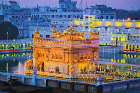
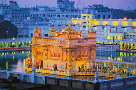
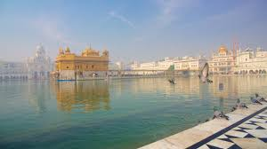
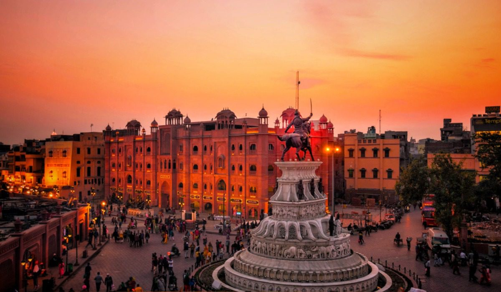
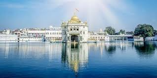
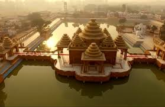
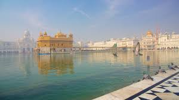
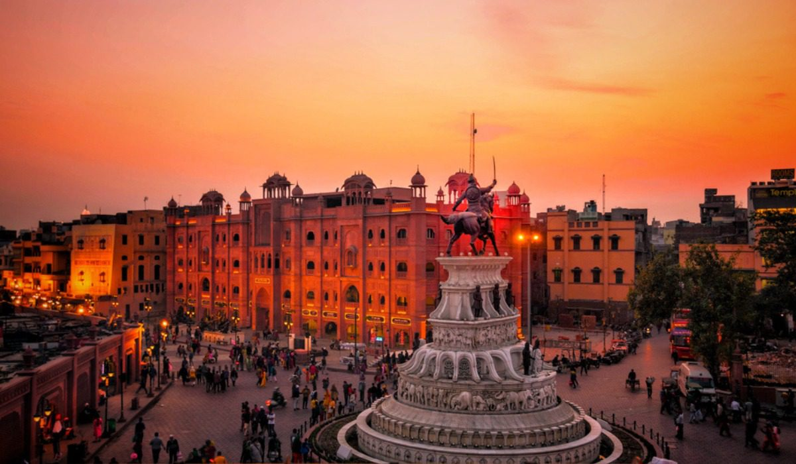
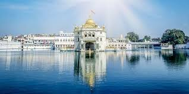
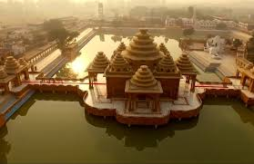

Golden Temple (Sri Harmandir Sahib)
Marble walkways, golden sanctum and a serene water tank open 24 hours.
Amritsar is the spiritual centre of Sikhism and home to the Golden Temple, one of the most important pilgrimage sites in India. The sound of kirtan, reflection in the holy sarovar and the community kitchen (langar) make it a powerful experience even for non-pilgrims.
Beyond the temple, Amritsar offers the Wagah Border ceremony, Jallianwala Bagh, Partition Museum, busy bazaars and heavy Punjabi food. It works well as a focused 2–3 day stop on a North India route.
Marble walkways, golden sanctum and a serene water tank open 24 hours.
Community kitchen serving free meals to thousands every day.
India–Pakistan border flag ceremony with marching and crowd energy.
Memorial and museum documenting key events of modern Indian history.
Walk around the sarovar, sit for kirtan and join the langar.
Evening flag-lowering event with synchronized drills and patriotic songs.
Try kulchas, lassi, chole-bhature and sweets around the temple and old lanes.
Visit Partition Museum, Gobindgarh Fort and local galleries for context.
Use these as a base and adjust timing to your pace.
Tight schedule
Comfortable pace
3–4 days
Easy access for early morning and late-night visits, walking-distance to langar.
Best for pilgrims and first-time visitors.
Modern cafes, parks and hotels away from the crowded core.
Good for families and longer, relaxed stays.
Budget stays with easy transport links and markets nearby.
Works if you are in transit or on a tight budget.

 

 







Simple habits that make temple visits and the city smoother.